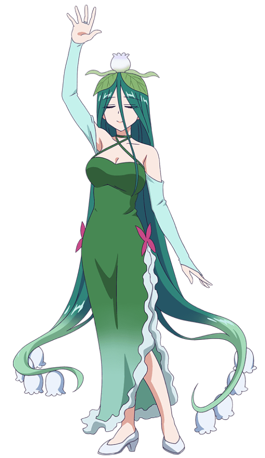

あらすじ
かつて、人と魔が存在していた時代。魔王は人間の姫をさらい、この世を支配しようとしていた。人々は怒り、悲しみ、姫を救うため勇者は旅立つ。そんな中、檻の中で姫は思った。
「寝る以外、することがない。」
安眠を求めて囚われの姫は、今日も魔王城で好き勝手するのであった。
登場キャラクター
主人公
- オーロラ・栖夜・リース・カイミーン
- 本作の主人公。人類統一国家カイミーン国の姫。作中ではフルネームで呼ばれることは少ない。
- 魔物からは「姫」、人々からは「スヤリス姫」と呼ばれており、栖夜（スヤ）以外は全て受け継いだ名前である。瞳の中の☆は王家の証。
- 統一国家の姫として国民に慕われるに足るスペックを備え、基本的に物静かで口数も少ないが、内面は極度のマイペースかつ毒舌、アグレッシブな行動力の塊であり、囚われの身でありながら魔族達を傍若無人に振り回している。
- 城内で関わった魔物をはじめ、他人を名前を覚えようとせずあだ名や印象で呼んでいる。本気を出すと怖い。
- 可憐な容姿に反し、並の魔物や冒険者を遥かに凌ぐ戦闘力を持つが、生身の人間ゆえにトラップや状態異常には弱い。
- 手先も非常に器用であり、前髪留めや毛糸のパンツといった身の回りの物から大がかりな家具に至るまで、あの手この手を駆使して自力で作り上げている。
- 基本的に利き腕は左のようだが、稀に右手で筆記や芋版掘りといった作業を行う描写が見られる。
- 王族として育ったためか世間一般的な感覚とのズレがみられ、持ち前の美貌と高貴さで魔族すらも魅了してしまう上に、思い違いや言葉足らずによる爆弾発言や大胆な行動で赤面させたり鼻血を吹かせてしまうこともあり、騒動を大きくしたり、あまつさえ魔物達に窘められる（たしなめられる）場面もある。
- 人質として魔王城に囚われるが、衣食住がそれなりに満たされた牢獄での生活に暇を持て余し、安眠する方法を日々模索しながら好き勝手に過ごしている。
- 就寝中にさらわれたため、作中で普段着ている服はパジャマである。元々着けていた冠はシザーマジシャンにあげており、お礼にもらった巨大バサミを主武装としている。
- 安眠を得るためならば手段を選ばず、魔物を倒して素材を剥ぎ取る、アイテムを盗み出す、幽閉場所を改造する、寝心地のいい場所を探すためあちこちを彷徨うなど、次々と騒動を巻き起こしては魔物達を困らせている。
- 姫として公務に追われる日々から一転した、悠々自適とすらいえる魔王城での生活に満足しており、また魔物達も姫に振り回されながらも次第に愛着を感じ始めている。
魔族側
人間と世界の勢力を二分する、魔の者ども。統治体制として頂点に魔王を戴き、その下に各エリアを統括する魔王直属の幹部｢十傑集｣、更にその配下として様々な種族の魔物が存在する。
魔王
- 魔王タソガレ
- 魔王城の主にして姫をさらった張本人。地の底より現れ、人間と魔の物で二分している権力をまるごと手に入れると宣言しているが、普段一番気にしていることはRPGで言うところの「フラグ管理」「戦闘バランス」「ゲームバランス調整」であり、勇者アカツキが自身の前に容易く辿り着くことがないよう、且つ挫折することがないよう色々と手を加えることをもっぱら趣味としている。普段は人間の青年のような容姿をしており、寝床やトイレといった生活環境も人間と同じである。先代魔王である父・ウシミツを敬愛しており、若干ファザコン気味。戦闘で本気を出す際は姿が変わるらしい。
- 魔王足り得る強大な力を持ちながらもヘタレな面が多々あり、心労が絶えないでいる。姫に対しては自らが囚われの身になった元凶であるため負い目を感じており、何かと気を遣って接するものの、姫の所業により毎度酷い目に遭っており、身から出た錆とはいえ不憫な立ち位置となっている。
十傑衆
前述の魔王直属の10人の幹部。しかし、実際は10人に満たしておらず、代わりに姫が会議に参加など実質入っている見方もされている。
- あくましゅうどうし
- 悪魔族の魔物で、魔王城内のエリア「悪魔教会」のボス。物腰の柔らかい穏やかな青年だが、魔王タソガレよりもはるかに年長者であり、ポセイドンからは「ジジイ」呼ばわりされている。魔王城で死者が出た際は大体彼が魔法で蘇生させているが、姫が備品の棺桶を隙あらば強奪していくので困っている。悪魔教会は邪神を祀っており、クリスマスは闇のミサ(という名のクリスマス会)を開催するため忙しくなる。基本的にヒーラーだが、攻撃の際はネクロマンシーになる。
- 魔王に負けず劣らず不憫な立ち位置にあり、姫がやってきてからは死者が激増し蘇生に追われ、疲労困憊の日々を送る羽目になる。姫のことは手のかかる孫娘のように思っている…と思われていたが、実は姫に恋心を抱いていることを周囲に指摘されるに至り、隠し切れない気持ちが暴走することもしばしば。最近、不運な巡り会わせと自業自得の半々の原因で、内外からの信用が絶賛急落中。本名はレオナールで姫にはレオくんと呼ばれる。
- レッドシベリアン・改
- 魔獣族の魔物で、幼少期から魔王に仕える忠犬にして側近。規律を重んじ、部下である沢山のレッドシベリアンを従え、自らが定めた「魔王城法典」を片手に日々城内の風紀を正している。頭が固く、趣味嗜好もあまりないカタブツ。お肉が大好き。豊かな胸毛が特徴。集団を従えての戦闘が多いが、単体での戦闘はサバット、爪、牙を駆使する。
- 姫が騒動を起こす度に「囚われの姫」らしくあるよう説教を試みるが、自分の胸毛を布団代わりにしてくる上、説教すら子守歌代わりにしてしまう姫が改心するはずもなく、いたちごっこが繰り返されている。逆に言うと姫相手にいたちごっこが出来る程度には強キャラで、姫を止めたりやり込めたりする機会も（大抵周囲に何らかの被害が出た後ではあるが）それなりにはある。姫への対策として胸毛を刈ることを考えるが、魔王タソガレがレッドシベリアン・改の胸毛を気に入っているため、刈ることができずにいる。
- ネオ＝アルラウネ

- 植物族の女性型魔物で、植物エリア「秘密の花園」のボス。状態異常攻めとチャームがヤバイ。基本的に性善説推しであり、レッドシベリアン・改が主である魔王タソガレのために規律を守るのに対し、彼女が守るのはあくまで自分の正義の規律である。兄がいるが、ポンコツな切り株の魔物のためエリアでの立場を守ってあげているものの、内心では少々腹黒い感情を抱いている。
- 基本的には人情味のある性格で、当初は囚われの身にある姫の心情を慮り、その所業を聞き及んでいてもなお同情するなど心の広さをみせるが、それすらも優に上回る姫の傍若無人振りを実際に目にして認識を改めざるを得なくなっている。
- 頭頂部や髪の先から、名称不明の花が咲いている。姫からは「セクシー」と呼ばれ、その凹凸豊かなスタイルに羨望のまなざしを向けられている。
- サンドドラゴン
- ドラゴン族の魔物。十傑集の一番槍を務めたが、勇者に倒され、しばらくは砂漠の砦付近に引きこもっていたが、後に魔王城に帰還してきた。短気な性格で、怒ると砂を出す性質を持つ。
- かえんどくりゅう
- ドラゴン族と悪魔族のハーフだがあまりドラゴンには見えない魔物で、炎エリア「古の大火山」のボス。執念深い性格で、非常に運が悪い。口内の強力な毒腺による事故を防ぐため、顔の大半をシールドで覆っている。
- サンドドラゴンに続き勇者に敗北したが、その敗因は姫をはじめ、他の十傑集の不注意も絡んで引き起こされた対勇者用支援アイテムのすり替えであり、特に勇者が姫の婚約者であることを知り動揺したあくましゅうどうしが、かえんどくりゅうもろともの爆殺を目論み強力な爆弾を入れていたことが致命的となった。
- ポセイドン
- 神族の魔物で、深海エリア「忘れられた深海」のボス。ハデスの弟であり、また海の神でもあり、相当に地位が高いハズだが、色々あって魔王の傘下となっている。幼い少年のような容姿で精神年齢も相応に幼い。似ているところがあることに嫌悪感を抱いている。その名の通り水属性であり、配管工事といった水のエキスパートとして修復部隊に加わることもある。また、空間転移魔法の使い手でもある。
- そこにいるだけで湿度を増幅させることから、姫と低レベルの罵り合いの末に喧嘩になるが、あくましゅうどうしの身を呈した仲裁を経て、一方的に友達となったものと思っている。かわいいものが好きで、姫の牢からでびあくまやナスあざらしを強奪していくこともある。姫からは「裸族」呼ばわりされている。海の日になると人間達からの信仰心が集まるため大人の姿になることが出来る。
- m.o.t.h.e.r
- からくりエリアのボスである男。秘密主義で心配性。からくりエリアである「完璧な楽園（アルファパラノイア）」に引きこもっていた。多くのからくり族を生み出したため、一応貢献はしているのが厄介。キマイラとして生まれたがその身体に不便さを覚え
- 何度か自身を改造して今の姿になった。城で見た攻撃性の高い生物（姫）を見て、兵器である姫ロボMarkⅢを作り上げる。その後、姫のプライバシーがオープンになりすぎていることを心配したびたび忠告する。
配下
- でびあくま
- 悪魔族の下級魔物。ペットとしても愛されるフワフワくまさん。誘惑に弱く流されやすい。魔王城に沢山生息しており、ブラッシングするといいわたが採れる。
- 姫にブラッシングされてその虜になり、交換条件として牢の鍵を差し出して以来、「姫が鍵を取り上げられる→ブラッシングのために鍵を持ってくる→姫が脱獄→・・」という無限ループが出来上がっている。姫にペットとして飼いならされるようになるが、ペット扱いは「愛玩動物となれ合う姿は実に囚われの姫らしい」との理由でレッドシベリアン・改からも公認されている。
- 戦闘になると、大抵逃げるか仲間を大量に呼ぶ。たまに姫を仲間として呼ぶ。
- おばけふろしき
- 九十九族の魔物。あまりに素晴らしい生地なせいで、勿体ぶって使われず仕舞われていた布のおばけ。美しく霊気に満ち、肌触りもさらさらで、おまけに相応に丈夫なために姫に目をつけられ、「寝具の材料として狩られる→報復にあらわれる→返り討ちに遭い狩られる→・・」のループを繰り返している。戦闘スタイルは締め付け。頭と手の部分は切断され牢の片隅にぞんざいに山積みされ、あくましゅうどうしによって蘇生のため定期的に回収されている。親玉であるかいぶつふろしきと共に襲い掛かることもあるが、やはり返り討ちに遭っている。
- はりとげマジロ
- 魔獣族の魔物。肉弾戦が得意で、防御力が自慢。背中のトゲを抜くと、何故か付け根の方がとがっているという優しい仕様。身長は2メートルぐらいでお腹が柔らかい。
- ヤレヤレ言いながら周囲のボケに突っ込んであげるせいか、友達が多い。頼まれると断れないタイプ。姫の巻き起こす騒動に巻き込まれたり、成り行きで面倒を見ることが多く、姫からは「とげちゃん」との愛称を付けられている。
- ミノタウロス
- 魔獣族の魔物で、はりとげマジロとよくつるんでいる仲間の1人。常識のある魔王城の一般人で、よく姫の暴挙に巻き込まれ、たまに素材にされかけたりする。可愛いものに目がなく、アイテムで幼児化した姫を見た際にはメロメロになった。
- やしき手下ゴブリン
- 精霊族の魔物で、はりとげマジロとよくつるんでいる仲間の1人。一緒によく姫の暴挙に巻き込まれる。自分を一般人だと思っており、普段は問題行動もなく常識的であるが、全裸になるとテンションが上がる悪癖があり、正気を保とうと四苦八苦する姿が周りからは異様だと思われている。
- フランケンゾンビ
- アンデット族の魔物で、はりとげマジロとよくつるんでいる仲間の1人。ただのゾンビから改造された魔物で、享楽主義の大雑把な性格であり、騒動に巻き込まれてもひとり大笑いしていたり、場の空気を読まない発言をして周囲から殴られることもある。城外でのアイテム採集といったクエストが好きで毎日でも行きたいらしい。
- ふたくびドラゴン
- 名の通り頭部が二つあるドラゴン族の魔物。おバカであり、魔物達のトラブルメーカー的な存在。頭にはそれぞれに脳があり会話も可能なため、延々と中身の無い話を続ける様は非常にやかましい。バカさからくる仕事の適当さが姫の巻き起こす騒動の発端となっていることもあるほか、姫の前でことあるごとにデリカシーのない発言や行動をとっては殺されているが、全く懲りていない。
- うろこトナカイ
- 魔獣族に見えるが、竜人族の魔物。トナカイのような外見だが、寒さにはあまり強くない。姫が初めて魔物(おばけふろしき)を殺害した現場を目撃した唯一の魔物であり、トラウマになりかけしばらく不眠に悩まされていた。姫の凶行にも大分慣れてきているものの、頻繁に騒動に遭遇しては振り回されている。戦闘ではヒーラーを担っており、姫の虫歯治療の際には応援に駆り出されている。
- アリクイ医師
- 幽霊族の魔物。アリクイを模したマスクと長い布をまとっているが、本体は耳の部分だけが判別できるのみで全貌は謎に包まれている。普段は穏やかで気弱にすら見えるが、戦闘になると「手術」と称してメスで切り裂き、「縫合」と称して針攻撃を繰り出してくる。よくモブとして登場し騒動に振り回されているが、最近はそんな姫をナデナデしたいと思っている。
- きゅうけつき
- アンデッド族の魔物で、同族の中でも最も若く、悪魔教会で雑用をこなす少年。下っ端生活を気に入っており、あくましゅうどうしのおつかいを楽しくこなしているが、よくモブとして騒動に巻き込まれる。輸血パックの独特の味を好みいつも携帯しているが、そのおかげで姫の凶刃を回避したことがある。
- 毒リンゴマンズ
- 悪の平和を守る、りんご（レッド）・青りんご（グリーン）・梨（イエロー）の三人組からなるラブリーでフルーティーな敵役。自称「魔王城で一番ジューシー」。「梨（イエロー）ってりんごじゃなくね？」とちょくちょくツッコまれるが華麗にスルーする。よくモブとして騒動に巻き込まれ、割られたり食べられたりとかなり悲惨な目に合うことが多い。魔族の子供たちからは人気があり、幼稚園児達の魔王城見学のプログラムには彼らのサイン会が組み込まれている。
- タイヤ魔神
- 九十九族の魔物。タイヤにガス状の魔物が融合したことにより人型を成した。姫にタイヤ部分を剥ぎ取られ、その後ガス状の魔物だけが蘇生され、結果どこかで見たことがあるような身軽な姿になった。姫に奪われたタイヤ部分は耐電用・耐寒用の防具として便利に使われている。
- マンゴラシア
- 植物族の魔物。50年に一度花開き、嗅いだ者を眠りに誘ういい香りを発するが、普段は香りを出さないため、香りを出させるには死ぬほど怖がらせることが必要となる。蕾状態でも意識はありテレパシーで会話できるため、移動しない魔物であるキバボックス、アイアンプレートらの仲が良い魔物と雑談や卓上遊戯に花を咲かせている。魔王城地下から姫の牢まで連れ出されるが、各所に残る殺戮の爪跡を目にして恐怖に陥り、以来花が開く周期が狂ってしまっている。
- ロケットタートル
- からくり族の魔物で、体が頭部と手足はロケット、しっぽが導火線となっており、体内には好物の火薬を大量に蓄えている。栄養として植物を摂取しているため火薬は嗜好品にあたるが、美味いからと大量に食べるために爆発した際の被害を拡大させている。ふたくびドラゴンにはしばしば爆発させられるものの、同レベルでおバカな上に過去を振り返らない性格のため関係は良好。
- 酔いどれ老師
- 九十九族の魔物で、瓢箪型の体内に大量の酒を蓄えている。しょっちゅう頭頂部の栓を外して自分で呑んでいるため常にほろ酔い状態であり、物知りなのだが思い出すのに時間がかかるのがその名の由来となった。姫に頭部を割られ、体内の酒を根こそぎ強奪されてからは、姫を前にすると危機感のあまり酔いが醒めるようになっている。
- ビービーワーカー
- 魔蟲族の魔物。「コロスコロスコロス・・・」との鳴き声を発するハチ型の魔物であり、彼らの集める蜜は様々な用途で重宝されているため、変な場所に巣をつくっても黙認されている。姫はハチを苦手としており、美肌パック目的でハチミツの強奪を画策した際にはアラージフの魔術によって世界中の同種族ごと異次元へ消し飛ばされ、復活した後も改めて駆逐される憂き目に遭っている。
- ネコスタンプ
- 猫型をした魔獣族の魔物。よく寝てよく笑うお人良しでな性格で、人語を操り、手足にはめた肉球型のスタンプによってどんな角度の壁も歩くことが出来る。スタンプは取外し可能で、本体と魔力でつながっている。あくましゅうどうしの蘇生ミスで姫と合体した際は、姫の意識が表に出ていたため暴れまわり「ネコスタンプ亜種」として名付けられている。
- おやじトンカチ
- 九十九族の魔物。魔王城の武具・アイテム作成を担っており、その腕は確かなもの。それなりに長生きしている存在だが、魔物で言えばせいぜい中年の坂を上り始めたぐらいである。自分の信じた道を突き進む性格が幸いし素晴らしい技術を身に着けたが、頑固者で思い込みが激しく、人質である姫のことをイメージだけで美化した挙句に哀れんでおり、姫が目の前にいても姫だと認識せず「ハサミ魔物」と称している。
- 「ハサミ魔物」の言葉に感化され、「まだ見ぬ姫」のために、と家具作りの技術を磨き始めている。
- 魔王城修復部隊 (アンテナおかいこ＆がいこつ兵)
- 巨大な魔王城のあらゆる損傷を改修して回る特殊部隊。アンテナおかいことがいこつ兵（ガイコツ兵、上級ガイコツ兵）の隊をメインに、工種によって複数の隊が存在するほか、上層部であっても得意分野の工事には参加することもある。
- アンテナおかいこは魔蟲族の魔物で、部隊の「仕事をするマスコット」。工事の仮留めなどに糸が大活躍しているが、引きこもり気質で生活力が皆無であり、もっぱらがいこつ兵のあばらに繭を作り住処にして共に行動している。
- がいこつ兵はアンデット族の魔物で、作業の主軸を担っている。姫が来てからは城内各所の破損・破壊が後を絶たなくなった結果、かなりの高給取りとなっている。
- ギアボルト博士
- 魔獣族の魔物だが、体の一部を改造しているためからくり族ともいえる。魔王城における発明やギミックのプロ。
- 本人が戦うことはないが、魔王城のみならず各地のダンジョンに至るまであらゆるギミックには彼が携わっているため、ある意味勇者と一番戦っている存在。例に漏れず姫による被害を受けており、渾身の自信作である巨大ロボ「シン・ギアボルター」を筆頭にいろいろ破壊されている。
- ナスあざらし
- あざらしの姿形をした魔海獣族の魔物。頭にナスのへたに似たものが生えているためこの名が付いたが、ゴマが好物なことから姫にどこかで聞いたようなあだ名を付けられそうになった。穏やかな気性とうるうるの目、ひんやりもちもちした抱き心地と、でびあくま同様にマスコットとしても愛されている。魔王城の氷エリアからペットとして連れ出されて以来、普段はでびあくま達と遊んで過ごしている。攻撃手段は口から出る氷の風だが、失火の際には消火に用いられている。
- 姫のペットとなった個体は餌付けと経験値を積んだ結果、ビッグナスあざらしへと進化し、圧倒的な巨体とパワーを獲得したため、次期エリアボス候補として名が挙がっている。
- あくむーwithバクムー
- 魔獣族の魔物であるが、夢の世界と現実世界を行き来できる特殊な魔物。あくむーは全身が黒いでびあくま、バクムーは巨大な獏（バク）のような姿をしている。
- 「魔王城の誰かが夢を見る→その夢があくむーに宿る→悪夢の場合、あくむーは状態異常を引き起こす「あくむのきり」を発する状態になる→あくむーをバクムーが取り込み、「あくむのきり」を栄養として摂取し、あくむーを浄化する→あくむーは夢の世界へ戻る→…」という関係になっている。
- 姫の数々の凶行が原因で悪夢を見る者が激増し、魔物達は寝不足状態、バクムーのお腹は限界寸前という事態となっていたが、姫がブラッシングによってあくむーを浄化したおかげで事態は一応沈静化するものの、今度はあくむーの願望や行動が魔物達の夢に出てくるようになってしまっている。
- ハーピィ
- 飛行能力を持つ鳥獣族の魔物で、ゆるふわ系女子。姫からは「鳥ガール」と呼ばれている。
- 人間の女の子に憧れており、姫と友達になろうとするが、姫からはもっぱら体（というより羽毛布団代わりになる羽根）だけを求められ、かなりぞんざいな扱いを受けている。それでも思い込みの激しい性格と時折かけられる言葉を都合よく解釈するため、友達としてもっと仲良くなろうと接し続けているが、姫からは「頭がHAPPY過ぎなのでは」と思われている。最近は姫への想いが募り過ぎて若干ストーカー気味になっている。
- のろいのおんがくか
- 鳥獣族の魔物で、ハーピィの弟。魔王軍の軍歌を作詞作曲した音楽家であるが、音楽以外にもマルチな才能を備えており、魔王城内での知名度は高い。姫の虫歯治療の際には「のろいのしかいし」として登場している。
- 姫からの要求により子守唄を作曲させられるが、その際に姫のエキセントリックな人柄を思い知り、姉から聞き及んでいた姫の人物像とのあまりのギャップに、姉がドＭなのではないかと疑っている。
- シザーマジシャン
- ハサミを司るからくり族の魔物。姫からの呼び名はその口癖から「あんら～さん」。
- ハサミを大量に付けた腕部の留め具が壊れて困っていたところ、姫から冠を提供され、そのお礼に大小多量のハサミをあげている。それ以来、姫とは比較的気楽な仲を築いており、また姫から危害を受けておらず、魔物達の中でも非常に珍しい立ち位置にある。
- キャラクター紹介ページでは情報の殆どにノイズがかけられており（情報自体は12巻のおまけでノイズがはがれたものがみられるようになっている）、十傑集会議にも参加していたが、実際は彼の制作者であり、引きこもりのm.o.t.h.e.rの代理として出ていた。
人間側
- オーロラ・音無・リース・カイミーン
- 人類統一国家カイミーンの女王にして、スヤリス姫の母。主に姫の回想にて後姿で登場する。姫は国王である父よりも母を慕っていたようで、「比較的常識的で少しおっとりしていて娘である私のことが大好き」と評している。しかし実際には少しおっとりどころではなく、この母にしてこの娘ありというほどぽわぽわしている。(仕事はしているらしい)
- 勇者アカツキ
- さらわれた姫を救うため立ち上がった人間の勇者。数々の武勲を持ち、カイミーン国からの信頼も厚く、姫の婚約者でもあるはずなのに、姫からは何回名乗っても名前を覚えてもらえないほど嫌われている。作中での出番は少ないため当初は印象が薄かったが、姫の回想等から、その一種異様なまでのポジティブさと鈍感さで、姫の無体さと互角に渡り合う強キャラであることが判明していく。くしゃみの音は姫と一緒。勇者と呼ばれるに相応しい実力は備えており、彼に倒された魔物は復活は出来ても魔力の大半を封印されてしまう。
- 名前の由来はことわざの「春眠暁を覚えず」。
- 魔道剣士キショウ
- アカツキと旅をしている仲間。和鎧を身に着けた侍のような出で立ちが特徴。
- 姫からの「安らぎのオーラ」を受け取ることで魔王城と空間をつなげる術を行使するが、結果的に姫に悪夢(＝幼少期のアカツキとの思い出)を見せる原因となっている。
- クコロロ・トラワーレ
- 人間の女戦士。自称「誇り高き女騎士」だが、行動も外見もシーフ・盗賊に近い。姫の居た王都から遠く離れた田舎出身。使用言語が違い、姫と意思疎通が出来ない上、普段見ていたニュースでも同時通訳の声しか知らなかった。負けず嫌いで少し抜けている。戦闘スタイルはシャベル。
その他
- アラージフ
- 人間によって記された闇の叡知の結晶、魔導書アラージフの精霊。強大な魔術を多く収録しているため、それを恐れた魔族の手によって「禁断の魔導書」として封印されていた。長寿だが、圧倒的に眠っていた時間の方が長いので精神年齢が幼い。人間の王族を「仕えるべき存在」としている。
- 姫によって封印が解かれた後、姫に従うようになっているが、魔力や魔術を与えるだけで直接行使は出来ないため、姫が希望するしょうもないことに強大な力を使わされている。
.png)